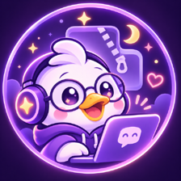

Conversation backups
Save and review accessible ChatGPT conversations as locally downloaded ZIP archives.
I'm DuckyDev, an independent developer creating practical AI tools, browser extensions and thoughtful automation.
Independent software · No affiliation with OpenAI

Save and review accessible ChatGPT conversations as locally downloaded ZIP archives.
Prepare printable views, PDFs and selected-message exports for your own records.
Inspect saved archives, integrity details and missing-file reports before relying on a backup.
Free beta planned. PHQ Chat Toolkit is proprietary software currently being prepared for the Opera Add-ons review process. No public extension download is offered on this site yet.
Contact DuckyDev for product support or privacy enquiries. Please don't email passwords, session cookies, private chat archives or sensitive attachments.